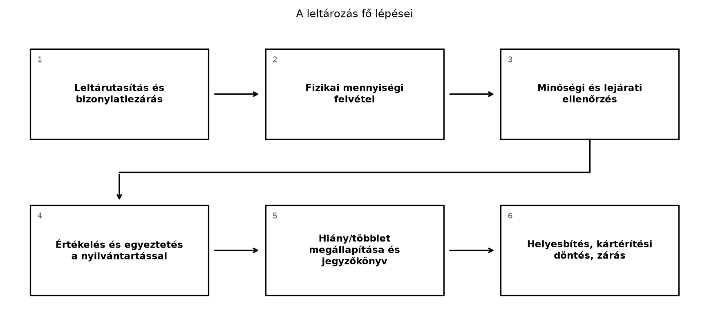

Egy cukrászüzemben a vezető havonta nem csak a forgalmat nézi, hanem azt is, hogy a raktárból kivett vaj, liszt, cukor és csokoládé valóban a termékekben, a vitrinben vagy a fagyasztóban van-e. Ha a nyilvántartás szerint 90 kg lisztnek kellene lennie, de csak 85 kg van, az 5 kg valahol „eltűnt”. Lehet mérési hiba, káló, nem rögzített selejt, de lehet gondatlan felhasználás vagy szándékos eltulajdonítás is. A leltározás és az elszámoltatás éppen arra való, hogy ezt az eltérést kimutassa, okát felderítse, és a felelősséget személyhez vagy eljárási hibához kösse. A tanulónak nem elég megsütnie a terméket; tudnia kell, hogy a készletgazdálkodás hibája pénzveszteséget, a nem dokumentált selejt pedig élelmiszerbiztonsági kockázatot is jelenthet.
Képzeld el, hogy egy hónap végén a cukrászda raktárában a csokoládépolcon a nyilvántartás szerint 25 kg étcsokoládénak kellene lennie. A mérlegen csak 23,6 kg van. A hiány 1,4 kg. A leltáros nem azonnal „tolvajt kiált”, hanem sorra ellenőrzi: a mérleg nullázva volt-e? A temperálógépben maradt-e csokoládé? A bonbonkészítés közben keletkezett-e cukrászati selejt, amit nem rögzítettek? A leltár tehát nemcsak számolás, hanem nyomozás is. Az alábbiakban ezt a gondolkodást tanítjuk meg.
Definíció. A leltár olyan tételes kimutatás, amely egy adott időpontban rögzíti a vállalkozás készleteit – nyersanyagokat, félkész termékeket, késztermékeket, csomagolóanyagokat – mennyiségben és értékben. A leltározás a leltár felvételének eljárása. Az elszámoltatás annak vizsgálata, hogy a felelős személy a rábízott készlettel el tud-e számolni, vagyis a tényleges készlet megfelel-e a nyilvántartásnak.
A cukrászüzemben a készletek köre széles:
Definíció. A leltárhiány az az eset, amikor a tényleges készlet kisebb, mint a nyilvántartás szerinti készlet. A leltártöbblet az, amikor a tényleges készlet nagyobb, mint a nyilvántartás szerinti. Mindkettő leltáreltérésnek minősül.
Ha , hiány van; ha , többlet van. A hiány és a többlet is hibát vagy dokumentálatlan mozgást jelezhet, ezért mindkettőt vizsgálni kell.
A gyakorlatban négy leltározási módot szoktak megkülönböztetni.
| Mód | Lényege, időzítése | Jellemző helyzet |
|---|---|---|
| Elszámoltató leltár | A készletért felelős személy folyamatosan nyilvántart, majd a zárásnál ténylegesen is felveszik a készletet. | Havi vagy negyedéves raktárzárás, raktáros elszámoltatása. |
| Lecsapó leltár | Váratlan, rövid idő alatt, gyakran csak egy termékcsoportra elvégzett ellenőrző leltár. | Fagyasztó, kávépult, alkoholos díszítő anyagok, drága csokoládé. |
| Átadó-átvevő leltár | Váltáskor két személy közösen felveszi a készletet. | Műszakváltás, raktárosváltás, cukrászda értékesítésének átadása. |
| Vagyonmegállapító leltár | Teljes körű, mérlegfordulónaphoz kötött leltár. | A beszámoló alátámasztása, adó- és számviteli zárás. |
Megjegyzés. A vagyonmegállapító leltár cél szerinti kategória; megvalósítható elszámoltató, lecsapó vagy átadó-átvevő szervezésben is. A pontos módot a vállalkozás belső leltározási szabályzata határozza meg.
A leltár akkor megbízható, ha nem csak „lemérünk mindent”, hanem a mozgásokat is lezárjuk.

A lépések részletesebben:
Higiénia. A leltározás közben nyersanyagokhoz tiszta kézzel, tiszta munkaruhában nyúlj. A lejárt, sérült csomagolású vagy érzékszervileg hibás tételt soha ne rakd vissza a „jó” készlet közé, hanem jelöld meg, és dokumentáld selejtként. A nem ehető, szennyezett anyag nem számolható el nyersanyagként.
Figyelem. A fizikai leltározás munka közben is balesetveszélyes lehet: hűtőben csúszós padló, magas polc, nehéz zsákok, törékeny üvegedények. Polcra, létrára történő felnyúlásnál csak biztonságos fellépőt használj, nehéz terhet emelőmozdulattal emelj, és hideg térben tarts szünetet.
A nyilvántartás szerinti készletet a raktárban így számolhatjuk:
ahol a bevételezett mennyiség, a bizonylatolt kiadás.
Szabály. A leltáreltérést mindig a tényleges és a nyilvántartás szerinti mennyiség különbsége adja:
Ha , hiány mutatkozik. A hiány értéke:
ahol a készlet egységára, például Ft/kg vagy Ft/db. A képletben azért szerepel negatív előjel, hogy a hiány értéke pozitív szám legyen.
Nem minden hiány azonos súlyú. Két fontos fogalom:
Definíció. A készentartási veszteség vagy káló az a tárolás, hűtés, darabolás, párásodás vagy levegőn tartás következtében fellépő, gondos munkavégzés mellett is elkerülhetetlen mennyiségi csökkenés. Például tisztulás, beszáradás, morzsolódás. Mértékét a cukrászatban elsősorban mérésből, technológiai utasításból vagy belső normatáblázatból kell meghatározni.
Definíció. A normalizált hiány az a belső szabályzatban vagy mérési tapasztalatban elfogadott mennyiség, amelyet a termelés, a raktározás vagy az értékesítés során gondos munka mellett is szükségszerű veszteségnek fogadnak el. A normalizált hiány nem automatikus „adalék”, hanem bizonyított, vezető által jóváhagyott érték.
Jogszabály. A vállalkozásnak a számviteli törvény (2000. évi C. törvény) szerint kell elkészítenie a beszámolót alátámasztó leltárt. A leltározási szabályzat, a kálók és a selejtelszámolás feltételei a belső szabályzat részét képezik. A munkavállaló a leltárhiányért csak akkor felel külön, ha vele írásban leltárfelelősségi megállapodást kötöttek, a készletet ténylegesen átvette és kizárólagosan (vagy csoportosan) kezelte, és a leltárt a leltározási szabályzat szerint vették fel; egyébként az általános kártérítési szabályok szerint, a munkáltató bizonyítási kötelezettségével vizsgálható a felelősség. A pontos mértéket és eljárást a hatályos szabályozás és a munkaszerződés szerint kell megállapítani (ellenőrizendő: számviteli törvény és a Munka Törvénykönyve kártérítési, leltárhiányra vonatkozó szabályai).
A normalizált hiány figyelembevételével az elszámoltatható hiány közelítő képlete:
Ha a tényleges hiány kisebb vagy egyenlő, mint az igazolt káló és a jóváhagyott normalizált veszteség, akkor az elszámoltatható hiány nulla. Ha nagyobb, akkor a fennmaradó részt további vizsgálattal kell tisztázni.
A raktár elszámoltatása azt jelenti, hogy a raktár felelőse a nyitó készletből, a bevételezésekből és a bizonylatolt kiadásokból levezetett záró készlettel szemben ténylegesen elszámol.
Példa (kidolgozott). Egy cukrászüzemi lisztraktárban a leltár napján a következő adatokat rögzítik:
A nyilvántartás szerinti záró készlet:
A tényleges mérés:
A leltáreltérés:
Tehát 2,8 kg leltárhiány mutatkozik.
A mérési tapasztalat szerint a liszt tárolási kálója 0,5% (ellenőrizendő: az üzlet saját mérése). A kezelt mennyiség:
Az igazolt káló:
Ha a hiányból 1,4 kg készentartási veszteségként írható le, akkor az elszámoltatható hiány:
Ha a liszt beszerzési ára 280 Ft/kg, akkor a megmaradó hiány értéke:
Ez egy tanulási példa; a káló mértékét a tényleges üzemi méréshez és belső szabályzathoz kell igazítani.
A termelés elszámoltatásakor a kérdés az, hogy a legyártott termékmennyiséghez a receptúra szerint szükséges anyagmennyiséget használták-e fel. A módszer lépései:
A norma szerinti felhasználás:
ahol a gyártott darabszám vagy tömeg, az egy termékre előírt anyagmennyiség. Az eltérés:
Példa (kidolgozott). Egy cukrászat 20 kg omlós linzertésztát gyárt. A belső normarecept szerint 1 kg tésztához az alábbi anyagok szükségesek.
| Nyersanyag | Norma 1 kg tésztához (g) | Norma 20 kg termeléshez (kg) | Ténylegesen felhasznált (kg) | Eltérés (kg) |
|---|---|---|---|---|
| Liszt | 520 | 10,40 | 10,85 | +0,45 |
| Vaj | 250 | 5,00 | 5,12 | +0,12 |
| Porcukor | 130 | 2,60 | 2,48 | −0,12 |
| Tojás | 100 | 2,00 | 1,95 | −0,05 |
| Összesen | 1 000 | 20,00 | 20,40 | +0,40 |
A teljes tésztafelhasználás 20,40 kg lett, szemben a 20,00 kg normával. A százalékos eltérés:
Ha a belső gyártási veszteségnorma 3%, akkor az összesített eltérés önmagában elfogadhatónak tűnik. Anyagonként azonban a liszt eltérése:
A porcukor eltérése:
A két anyag ellentétes irányú eltérése mérési vagy adagolási pontatlanságra hívja fel a figyelmet. Lehet, hogy a mérleg nem volt nullázva, vagy a lisztet és a porcukrot hasonló göngyölegben összekeverték. Az összesített 2,0% tehát nem helyettesíti az anyagonkénti elemzést.
Az értékesítés elszámoltatása a cukrászdában nem csupán a pénztárgépszalag és a kassza egyeztetése. Azt is vizsgálni kell, hogy a késztermék-fogyás összhangban van-e az eladott mennyiséggel. A kiinduló egyenlet:
ahol:
A pénztárgéppel mért tényleges értékesítést ezzel az elméleti értékkel hasonlítjuk össze. Az eltérést mindig meg kell magyarázni.
Számítás. Egy műszakban a pultban 16 szelet Sacher-torta volt nyitó készlet, a műhelyből betároltak 40 szeletet. A záráskor 10 szelet maradt. A dokumentált selejt 1 szelet, reprezentációra átadtak 2 szeletet, catering megrendelésre 4 szeletet. A várható értékesítés:
Ha a pénztárgép szerint 36 szeletet adtak el, akkor 3 szeletnek hiányzik a nyomon követése. Ilyenkor ellenőrizni kell a súlyos selejtezést, a nem rögzített kóstoltatást, a hibás vitrinzárást vagy az elmaradt bizonylatot, mielőtt bárkit felelősségre vonnának.
Helyzet. Egy kávézóval egybeépített cukrászdában hétfő reggel átadó-átvevő leltárt tartanak a száraz, hűvös raktárpolcon tárolt készletre (tárolási hőmérséklet: ellenőrizendő: gyártói adatlap). Az esti műszak szerint 24,0 kg temperált étcsokoládé van a bonbonkészítéshez. A reggeli átvevő csak 23,1 kg-ot mér, ezért 0,9 kg hiányt jegyez fel.
Mi történik? Az átadó nem ír alá, és azt mondja, hogy előző nap este pontosan mért. A vezető utasítására újra elvégzik a mérést. Kiderül, hogy az esti mérésnél a digitális mérleget nem nullázták le a 0,3 kg-os tálca előtt, így az átadói érték helyesen kg. Emellett a temperálókádban 0,4 kg dermedt csokoládé maradt, amelyet nem mértek be a tárolt készletbe. A helyesbített tényleges készlet így kg, a nyilvántartás szerinti készlet 23,7 kg, a megmaradó hiány kg, nem 0,9 kg. A 0,2 kg-ra vonatkozóan jegyzőkönyvet vesznek fel, és ellenőrzik a selejtnyomtatványt.
Tanulság. Az átadó-átvevő leltárnál a mérleget nullázni kell, minden edényt és berendezést egyértelmű jelöléssel kell ellenőrizni, és az eltérést a helyes mérés után, jegyzőkönyvben kell rögzíteni. A hiányt nem a másik munkatárs „bevallása” alapján állapítják meg, hanem mérési és bizonylati bizonyítékok alapján.
A leltár minőségi értékelése három szintre terjed ki: a készlet, a mérés és a bizonylat minőségére.
A jó leltár dokumentált, ismételhető, és a felelősök aláírásával lezárt. A rossz leltár nem lehet alapja sem elszámoltatásnak, sem kártérítési döntésnek.
A hiányt azonnal lopásnak minősítik. Tünet: a vezető a leltáreltérést automatikusan a dolgozóra terheli. Ok: nincs különbség a mérési hiba, a káló, a selejt és a szándékos kár között. Megelőzés: minden eltéréshez keressük a bizonylati és mérési magyarázatot.
A bizonylatokat nem zárják le a leltárpillanatban. Tünet: a leltár közben is szállítanak be, kivesznek a raktárból, ezért a záró készlet nem reprodukálható. Megelőzés: leltárutasításban rögzíteni kell, hogy a felvétel idejére a mozgásokat lezárják.
A normalizált hiányt automatikusan levonják. Tünet: a hiány 3%, a szabályzatban 3% normalizált hiány van, ezért a vezető lezárja az ügyet. Ok: a normalizált veszteség igazolás hiányában nem feltétlenül érvényes. Megelőzés: az elfogadott kálót termékenként, mértékegységgel és mérési adattal alá kell támasztani.
A lejárt terméket a leltárban „jó” készletként mutatják ki. Tünet: a készletérték magas, de az eladhatatlan termék kikerül a képből. Megelőzés: leltározáskor külön kell választani a lejárt, sérült, fagyott–olvadt tételeket, és selejtezési dokumentumot kell készíteni.
Tilos. A leltáreltérést utólag fiktív bevételezéssel, fiktív kiadási bizonylattal vagy le nem mért „maradékkal” eltüntetni. Tilos lejárt vagy romlott élelmiszert a készletben hagyni, hogy a hiány matematikailag kisebb legyen.
1. feladat (A)
Határozd meg röviden: leltár, leltárhiány, leltártöbblet, készentartási
veszteség.
2. feladat (A)
Sorold fel a leltározás négy, a fejezetben tárgyalt módját, és
mindegyikhez írj egy-egy cukrászati példát.
3. feladat (B)
Egy csokoládéraktárban a nyitó készlet 45 kg, a bevételezés 125 kg, a
kiadás 110 kg. A tényleges záró készlet 58,8 kg. Az igazolt káló 0,8
kg.
a) Mennyi a nyilvántartás szerinti záró készlet?
b) Mekkora a leltáreltérés?
c) Mekkora az elszámoltatható hiány a káló figyelembevételével?
4. feladat (B)
Egy termelési műszakban 40 db gyümölcstorta készül. A norma szerint egy
tortához 0,150 kg porcukor szükséges. A tényleges porcukorfelhasználás
6,5 kg. Számítsd ki a norma szerinti felhasználást, az eltérést
kilogrammban és százalékban.
5. feladat (C)
Egy leltárvizsgálat során a tojásból 25 db hiányzik. A hűtőnapló szerint
a hűtő két órán át a megengedettnél melegebb volt. A dolgozók elmondják,
hogy a feltört tojásokból reggeli omlett készült a személyzetnek. Hogyan
kell ezt helyesen elszámolni? Mi a hiba a jelenlegi helyzetben? Melyik
bizonylat hiányzik?
6. feladat (C)
A vezető azt mondja: „Nálunk minden 3% alatti leltárhiány normalizált
hiány, tehát nem vizsgáljuk.” Miért veszélyes ez a gyakorlat? Milyen
feltételekkel lehetne a 3%-ot elfogadni?
7. feladat (D)
Válassz a tanműhelyben vagy otthon öt nyersanyagot, amelyből ismert a
vásárolt, a felhasznált és a maradék mennyiség. Készíts egyszerű
leltárívet: nyitó készlet, bevételezés, kiadás, nyilvántartás szerinti
záró, tényleges záró, eltérés, megjegyzés. Értékeld az eltérést, és
javasolj javítást.
1. feladat (A)
- Leltár: tételes készletkimutatás adott időpontban.
- Leltárhiány: a tényleges készlet kisebb a nyilvántartásnál.
- Leltártöbblet: a tényleges készlet nagyobb a nyilvántartásnál.
- Készentartási veszteség: a tárolás, hűtés, tisztulás következtében
fellépő, gondos munkavégzés mellett is elkerülhetetlen mennyiségi
csökkenés, például káló.
2. feladat (A)
- Elszámoltató: havi raktárzárás a lisztraktárban.
- Lecsapó: váratlan ellenőrzés a drága étcsokoládéra.
- Átadó-átvevő: műszakváltás a fagylaltpultban.
- Vagyonmegállapító: év végi teljes körű leltár a beszámolóhoz.
3. feladat (B)
Ez 1,2 kg hiány.
4. feladat (B)
Norma szerinti felhasználás:
Eltérés:
Százalékban:
A porcukorfelhasználás 8,3%-kal haladja meg a normát.
5. feladat (C)
A hibás gyakorlat az, hogy a tojást a hiány csökkentése érdekében nem
rögzítették. Helyesen: (1) a hűtőhibát a hőmérsékletnaplóban és
helyesbítő intézkedésként rögzíteni kell, a hűtő tartalmát a HACCP-terv
szerint kell megítélni (ellenőrizendő: üzemi HACCP-terv,
NÉBIH-útmutató); (2) a repedt, feltört tojás élelmiszer-biztonsági okból
nem használható fel (a hűtőhibás nyersanyagot nem szabad a személyzet
étkeztetésével „eltüntetni”), ezért selejtjegyzőkönyvvel kell kivezetni;
ha a vezető dokumentáltan felhasználhatónak minősítette, akkor
személyzeti étkezési kiadási bizonylat kell, nem selejt – egy tételt
csak egy jogcímen szabad könyvelni; (3) hiányzik a hűtőhiba helyesbítő
tevékenységének dokumentálása és a kiadási vagy selejtbizonylat. A
dolgozó nem hibáztatható automatikusan, de az eljárás így nem
átlátható.
6. feladat (C)
Veszélyes, mert a 3% nem jogszabályi automatikus kedvezmény, és így a
valódi kálót, a mérési hibát, a selejtet és a nem dokumentált
felhasználást összemossák. A 3%-ot csak akkor lehet elfogadni, ha
termékkörönként, mértékegységgel, mérési jegyzőkönyvvel és vezetői
jóváhagyással alá van támasztva, és csak a gondos munkavégzés mellett
keletkező, bizonyított veszteségre vonatkozik.
7. feladat (D)
A tanuló értékelésénél azt kell nézni, hogy a leltárív minden sora
helyesen tartalmazza a mértékegységet, a nyitó–bevételezés–kiadás–záró
logikát, és az eltérés magyarázatában megkülönbözteti a kálót, mérési
hibát és dokumentálatlan felhasználást. Például: ha 5 kg liszt nyitó, 2
kg beszerzés, 4 kg felhasználás, akkor a nyilvántartás szerinti záró 3
kg. Ha a tényleges 2,9 kg, a hiány 0,1 kg, ami lehet mérési vagy kis
morzsolódási veszteség.
A leltározás a cukrászati készletgazdálkodás záró ellenőrzése. A leltár tételesen, adott időpontban rögzíti a készleteket mennyiségben és értékben. A leltározás fő módjai: elszámoltató, lecsapó, átadó-átvevő és vagyonmegállapító. A leltáreltérést a tényleges és a nyilvántartás szerinti készlet különbsége adja; a negatív eltérés hiány, a pozitív többlet. A raktár elszámoltatása a nyitó + bevételezés − kiadás képletre épül. A termelés elszámoltatása a receptúra szerinti norma és a tényleges felhasználás összevetését jelenti. A normalizált hiány csak mért, jóváhagyott, termékkörhöz kötött veszteség lehet, nem automatikus százalék. A készentartási veszteség a tárolás alatti káló, amelyet bizonylattal kell alátámasztani. A leltáreredményeket, a selejtet és a kártérítési döntéseket mindig jegyzőkönyvben kell rögzíteni.
Továbbvitt eredmény. Az itt tanult leltárlogikát és az eltérések elemzését a Komplex gyakorló vizsgafeladatok megoldással alfejezet alkalmazza, ahol a tanulónak adott bizonylatokból kell leltáreredményt és felelősségi helyzetet megállapítania.
A fejezetben használt 0,5% lisztkáló, 3% gyártási veszteség és 280 Ft/kg lisztár kifejezetten tanulási példa, nem általános hatósági vagy szakmai előírás.